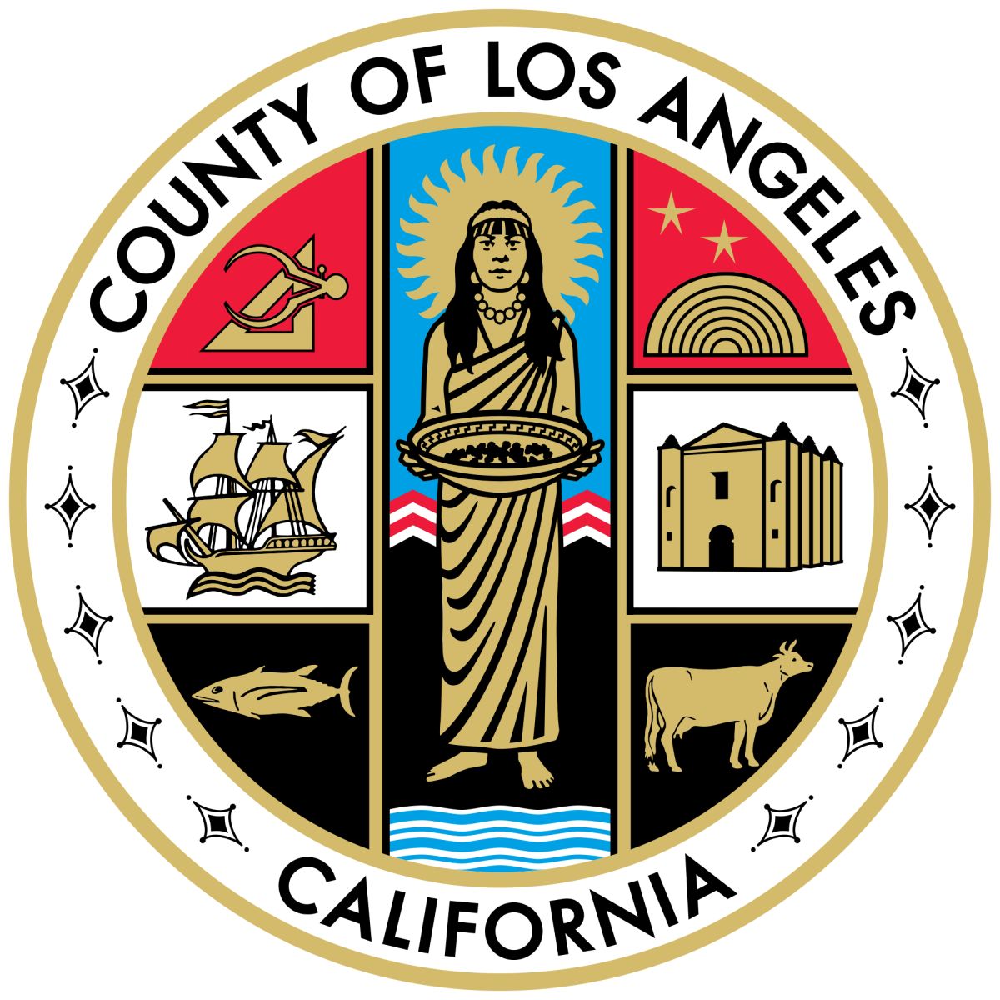
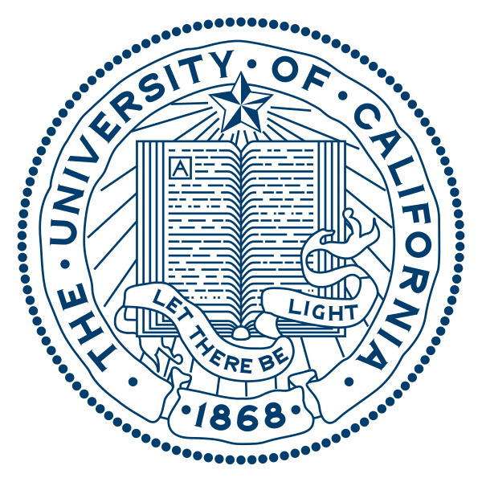
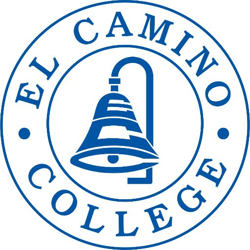

I worked as a floating Field Support Technician during the 2020 Federal Election.
I was responsible for managing all computer systems at 2 voting centers in Los Angeles. It
was my responsibility to maintain the chain of custody over voters' ballots and ensure
their validity not be compromised.
2018
University of California Santa Cruz

I was a Food Service Worker at UCSC. I was tasked with helping prepare and serve meals, taking care of
customer complaints, and cleaning up the dining hall.

Before I transfered to UCSC, I tutored math at El Camino College.
I helped at all levels of math from basic arithmatic to linear algebra.
I also acted as a tutor for a basic arithmatice class. I helped with all
classwork and graded their exams.
2015-2017
American Honda Motor co
I worked as a Shipping Material Handler at Honda. We were responsible for packing and shipping all of the automotive parts
that were ordered by any Honda dealership on the West Coast. As a student, I also had to manage 20-hour work weeks with
15-18 unit school schedules with at least a 3.5 gpa.